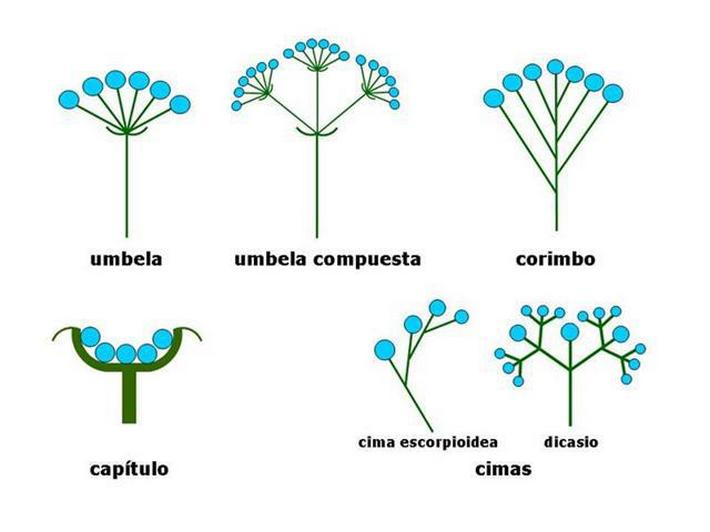

Albizia julibrissin Durazz. - Árbol de la seda
Oriunda de Asia subtropical (India, Taiwan, China…). Se parece mucho a las acacias (género Acacia) y hasta hace unos años la especie Albizia pertenecía a este género. Al final, por presentar múltiples características diferentes se la elevó a género separándola de las acacias.

Entre Junio y Julio se pueden ver sus llamativas inflorescencias (se dice así del conjunto de flores que crecen de un mismo tallo o cullo brote inicial se ramifica) globosas de colores blancos y algo rosados. Tienen forma de mazorca en la parte final de las ramas y los estambres son muy largos y de color rosa. Estas inflorescencias atraen a muchas mariposas y tienen un intenso olor.
Presenta una gran umbela (ver dibujo) y es de hoja caduca.
El género toma nombre por el naturalista florentino Filippo degli Albizzi, que lo introdujo en Europa desde Constantinopla en el 1749.
Las hojas se utilizan para forrajeo y las semillas (ver foto siguiente) son muy tóxicas para las larvas de algunas polillas. En China usaban los tallos secos para hacer tónicos sedantes.
La corteza de la Albizia anthelmintica, otra especie del género, se usa en algunas zonas de África por los pastores para ayudar a tratar a los animales afectados por gusanos parásitos en su interior (helminto significa gusano).
Si quieres comprobar cuanto sabes de la Albizia selecciona a continuación tu nivel educativo